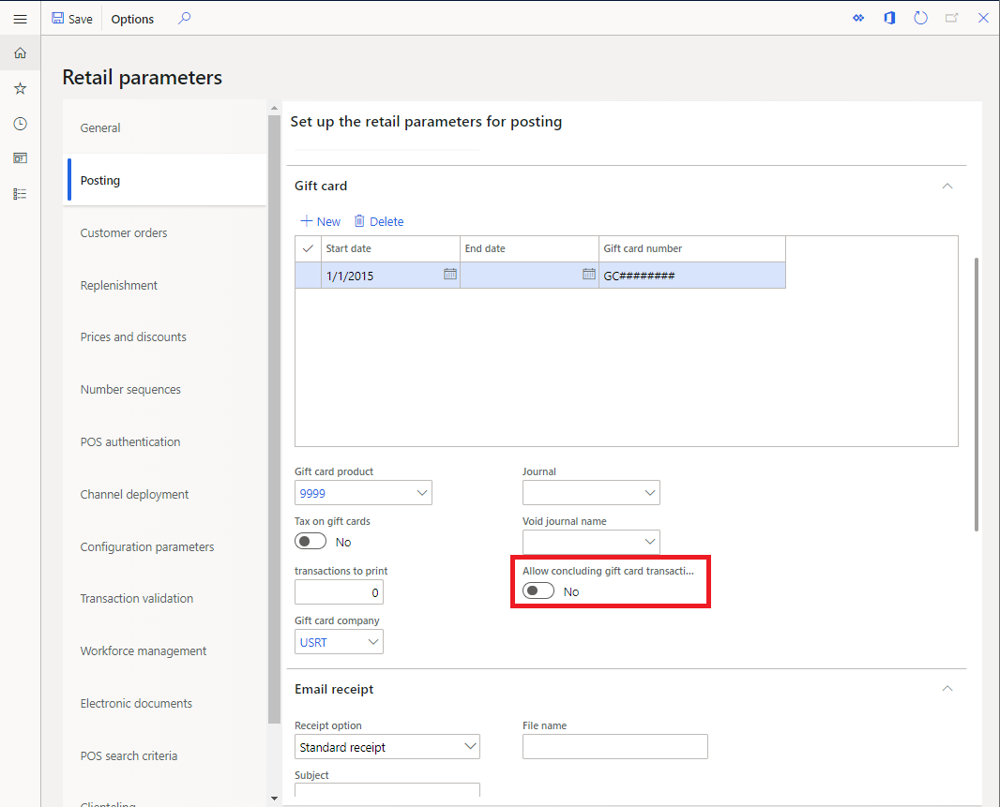

Nahtloser Offline-Schalter für Geschenkkarten- und Gutschriftsvorgänge
Important
Dynamics 365 Retail ist jetzt Dynamics 365 Commerce und bietet umfassende Handelsfunktionen für alle Kanäle – von E-Commerce über Shops bis hin zu Callcentern. Weitere Informationen zu diesen Änderungen finden Sie unter Microsoft Dynamics 365 Commerce.
Wenn ein POS-Gerät (Point of Sale) die Verbindung zur Kanaldatenbank verliert, können die meisten laufenden POS-Operationen und Transaktionen fortgesetzt werden, nachdem der Kassierer eine Warnmeldung über den Verlust der Verbindung erhalten hat. In einigen Fällen weisen Transaktionen jedoch Elemente auf, die auf den Echtzeitdienst angewiesen sind, und diese Elemente werden nicht unterstützt, wenn das POS-Gerät offline ist. In diesem Thema werden einige Funktionen beschrieben, die dazu beitragen, die Auswirkungen des Konnektivitätsverlusts in diesen Szenarien zu reduzieren.
Abschließen von Geschenkkartentransaktionen im Offline-Modus
Interne Geschenkkarten sind auf den Echtzeitdienst angewiesen, da das Guthaben für die Geschenkkarten zentral in der Microsoft Dynamics 365 Commerce Headquarters verwaltet werden muss. Um Betrug oder andere Synchronisierungsprobleme zu verhindern, werden Geschenkkarten gesperrt, sobald sie einer Transaktion hinzugefügt werden. Die Sperrfunktion stellt sicher, dass eine Geschenkkarte nicht gleichzeitig an mehreren Terminals verwendet werden kann. Wenn eine Transaktion abgeschlossen ist, wird die Geschenkkarte aktualisiert und entsperrt.
Verliert die Kasse jedoch die Verbindung, nachdem eine Geschenkkarte einer Transaktion hinzugefügt wurde, kann die Geschenkkarte unbrauchbar werden. Um diese Situation zu verhindern, verfügt Dynamics 365 Commerce über einen Parameter, der es ermöglicht, Transaktionen, die eine Geschenkkartenzeile enthalten, abzuschließen, während das Kassensystem offline ist. Wenn dieser Parameter aktiviert ist, werden Geschenkkartentransaktionen, die offline erzwungen werden, zusammen mit Offline-Transaktionen gespeichert und mit Commerce Headquarters synchronisiert, wenn die Offline-Transaktionen synchronisiert werden. Durch die Synchronisation wird auch die Geschenkkarte entsperrt, sodass sie an einem anderen Terminal verwendet werden kann.
Um die Funktionalität zum Abschluss von Geschenkkartentransaktionen nach dem Wechsel in den Offline-Modus zu aktivieren, gehen Sie auf die Registerkarte Buchung auf der Seite Commerce-Parameter. Suchen Sie auf dieser Registerkarte die Registerkarte Geschenkkarte und stellen Sie Abschließen von Geschenkkartentransaktionen im Offline-Modus auf Ja ein.

Commerce-Prameter werden normalerweise im Cache gespeichert. Daher kann es nach der Aktualisierung der Einstellung dieses Parameters und der Einleitung des Verteilungsplans zur Synchronisierung der Änderung mit dem Kanal bis zu 24 Stunden dauern, bis die Änderung wirksam wird. Um die Änderung sofort wirksam werden zu lassen, setzen Sie Microsoft Internet Information Services (IIS) zurück.
Abschließen von Gutschriftstransaktionen im Offline-Modus
Wie die internen Geschenkkarten werden auch die Gutschriften zentral in Commerce Headquartersverwaltet. Commerce verfügt über einen Parameter, der es ermöglicht, Gutschriftstransaktionen durchzuführen, während die Kasse offline ist. Dieser Parameter funktioniert wie der im vorigen Abschnitt erwähnte Geschenkkartenparameter. Wenn der Parameter eingeschaltet wird, werden Gutschriftstransaktionen, die offline erzwungen werden, zusammen mit anderen Transaktionen, die durchgeführt wurden, während die Kasse offline war, mit der Kanaldatenbank synchronisiert.
Um die Funktionalität zum Abschluss von Gutschriftstransaktionen nach dem Wechsel in den Offline-Modus zu aktivieren, gehen Sie auf die Registerkarte Posting auf der Seite Commerce-Parameter. Suchen Sie auf dieser Registerkarte die Registerkarte Gutschrift und stellen Sie Abschließen von Gutschriftstransaktionen im Offline-Modus auf Ja ein.

Commerce-Prameter werden normalerweise im Cache gespeichert. Daher kann es nach der Aktualisierung der Einstellung dieses Parameters und der Einleitung des Verteilungsplans zur Synchronisierung der Änderung mit dem Kanal bis zu 24 Stunden dauern, bis die Änderung wirksam wird. Um die Änderung sofort wirksam werden zu lassen, setzen Sie den IIS zurück.